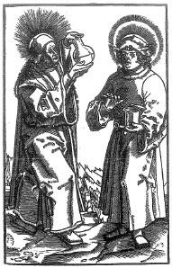

ŞEKİL 13. Aziz Cosmas (idrar muayene şişesi ile) ve Aziz Damian (merhem kabı ve spatula ile) [Hans von Gersdorff’un (1456-1517) Feldtbuch der Wundartzney (Savaş Cerrahlığı Kitabı) (Strasbourg, 1517) adlı eserinde Johannes Wechtlin (1490-1530) tarafından yapılan resim].37, 39
Ortaçağ Avrupa’sında “manastır hekimliği” ortaya çıktı. Buralarda Eskiçağ hekimlerinin eserleri incelendi, manastırların içinde tıbbî bitkilerin yetiştirildiği “Hortuli” adı verilen bahçeler kuruldu. Buralarda mide bulantısına karşı iyi gelen biberiye, burun kanamasını durdurmak için doğrudan burun deliklerine uygulanan ya da baş ağrısında şarapla birlikte içilen sedefotu gibi şifalı bitkiler yetiştiriliyordu. Pişirilmiş ve ezilmiş gül goncalarından yapılan şurup, yetkin bir müshil idi. Hekimlik uzun süre papaz ve rahibelerin tekelinde kaldı. 650 yılında Paris’te kurulan Hôtel-Dieu Hastanesi, 1505 yılına kadar Notre-Dame Kilisesi’nin yönetiminde kaldı. Başka bir ünlü hastane, 1145’de Montpellier’de (Güney Fransa) inşa edilen Holy Ghost (Kutsal Hayalet) Hastanesi idi. Bu uğraşların dinsel ibadeti engellediği gerekçesiyle 1130/1131’de manastır hekimliği yasaklandı. 1163’te ise din adamlarının cerrahi girişimlerde bulunmaları yasaklandı. İlaç hazırlama işleri, “apothicaire” adı verilen kişilere verildi. Bunlar başlangıçta aktar olmakla birlikte, zamanla eczacılığın kurulmasına yardımcı oldular (ŞEKİL 14, ŞEKİL 15, ŞEKİL 16).40 Eczacılığın tıp biliminden ayrılarak bağımsız bir meslek haline gelmesi, yavaş gerçekleşmiştir. Fransız yazar Etienne Boileau’nun (1210-1270) 1268 tarihli Le livre des métiers (Meslekler Kitabı) adlı eserinde “apothicaire”ler, bağımsız bir meslek olarak gösterilmiştir.41